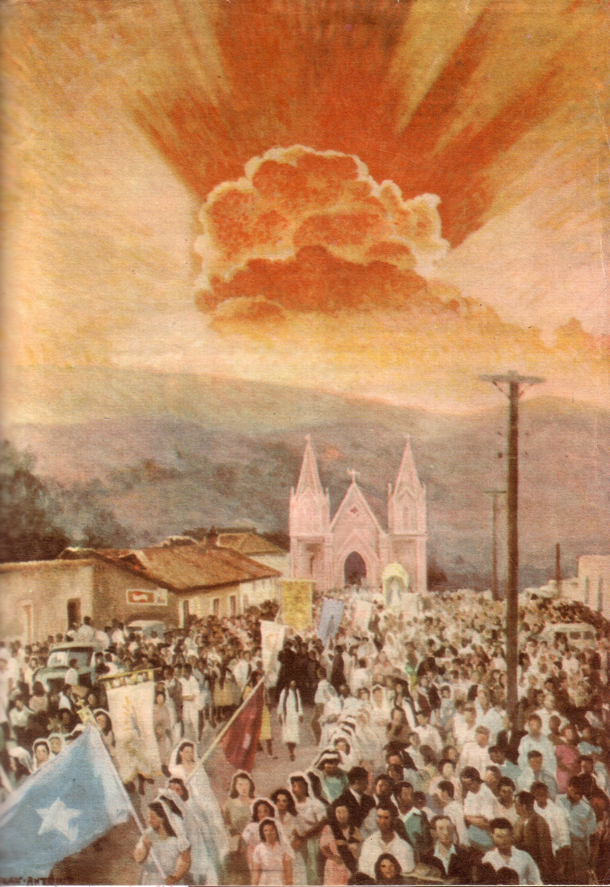
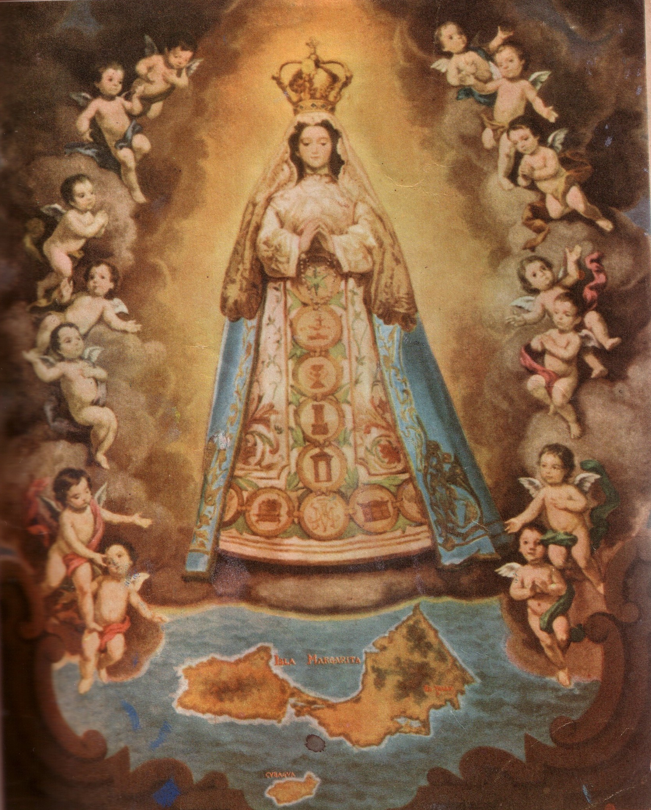
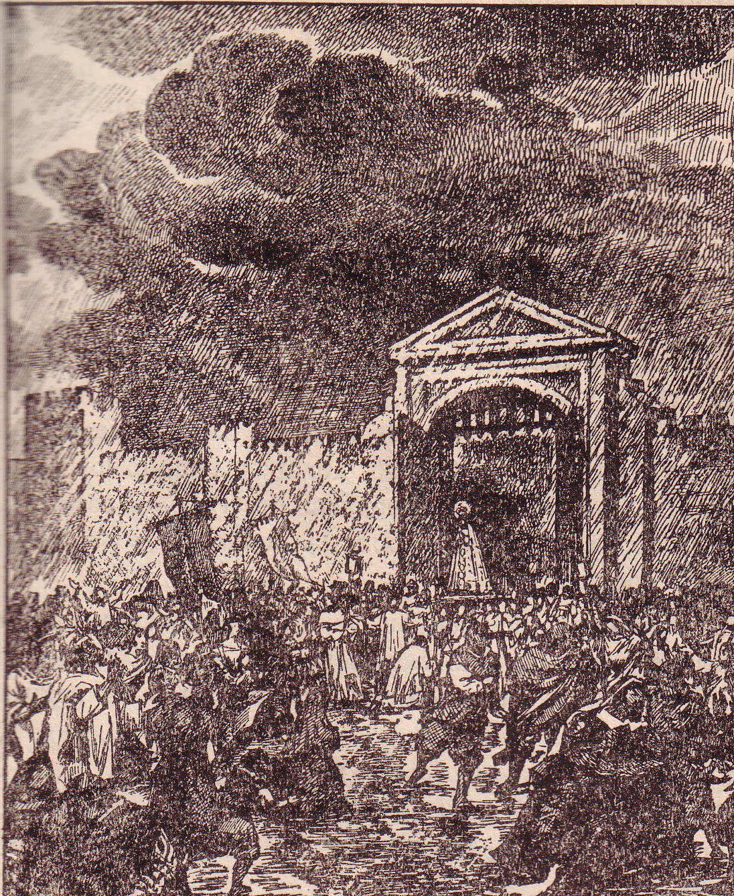

Una vez que la Virgen de El Valle tomó posesión de su Ermita, en el Valle de la Margarita, fue entronizada un día 8 Septiembre, día de la natividad de la Virgen María. La historia señala que arribó a las playas margariteñas el año 1542, doce años después de su llegada a Cubagua. Fue bendecida y entronizada, posiblemente por el padre Antonio Meléndez o por el Vicario Francisco de Villa Corta, fundador de la Villa del Espíritu Santo.


A partir de ese momento, el pueblo con el correr del tiempo, dejó de llamarla Purísima para designarla simplemente, con el nombre del pueblo donde se encontraba la Ermita, "El Valle". La noticia de su llegada se expandió por todos los rincones de la isla y de tierra firme, entre nativos, indios, negros y españoles; muy pronto comenzaron a visitarla, y la fama de su belleza y bondad se extendió cual relámpago en la noche oscura, a la cual ella correspondió, abriendo su corazón a las suplicas de sus hijos, intercediendo como lo hizo una vez en Canaán de Galilea.
No creemos que ningún mortal, hijo de la estirpe de Adán, haya arrancado de lo más profundo de su alma, palabras más elocuentes y versos más puros que al leerlos hagan vibrar las fibras más recónditas de nuestro ser, haciendo brotar lágrimas de nuestros ojos y palpitar hasta lo más duros corazones. Corresponde ese honor al hermano Nectario María; por eso en muestra de agradecimiento hemos querido transcribir textualmente el contenido de las páginas 80, 82 y 83 de su obra “Un Gran Santuario De Venezuela, La Virgen De El Valle De Margarita".
"... Desde entonces, su santuario, cual celestial imán de almas, atrajo, sin cesar, los fieles a su sagrado recinto, y el número de visitantes ha sostenido un ritmo progresivo y continuo por espacio de casi cuatro siglos.
Cuantos llantos enjugados, cuántas penas calmadas, cuantos dolores apagados y cuantas gracias derramadas sobre las almas que en el Valle han venido, durante más de cuatrocientos años, a postrarse a los pies de la Madre Clemente para contarle sus cuitas, llorar sus desventuras e implorar su maternal protección.
Dichosa tú, isla querida, que guardas en tu Valle bendito la Margarita más preciada y más brillante que las miles que de sus entrañas tus mares han arrojado. Virgen del Valle, tu nombre reverente invoca el marino en lucha sin par contra las embravecidas olas del Océano, rota la quilla que su frágil esquife, la existencia a la merced del traidor y despiadado elemento, cobra valor y serena confianza al recuerdo de tu sagrada imagen y de su enardecido pecho brota el grito de esperanza que te arranca protección y vida.
La desamparada viuda halla a tus plantas consuelo y valor en su desgracia; y el niño que juega y el hombre que trabaja, hacia ti tienden su vista e invocan tu bendito nombre, Virgen de Margarita.
Tu amor es fuego inextensible que al pecador purifica y al justo alienta y sostiene, y, desde tu cuatro secular trono del Valle, has derramado, ¡Oh Virgen¡ sobre Margarita y Venezuela toda, los efluvios de tu amparo y misericordiosa protección.
El humilde labriego que riega el campo con el sudor de su frente y va surcando el ingrato suelo para arrancarle el sostén de su vida, se acuerda de Ti, Virgen del Valle, en medio de tan penoso labrar; y cuando los ardores de un clima abrasador amenazan destruir sus cosechas, impetra de ti hagas caer sobre las arideces de su tierra la vivificadora lluvia.
El conductor que con su vehículo de fuerza motriz se desliza veloz por las carreteras de la isla, antes de que el peligro lo amenace, ya ha implorado tu segura protección.
Los jóvenes esposos que ante el altar Santo del señor ligan sus vidas para un vivir feliz, inician su nuevo estado impetrando de Ti, Virgen del Valle, tu patrocinio y protección.
El buzo, antes de sumergirse y arrancar al mar sus tesoros, te invoca con confianza, y, dichoso, al salir a flote, la vista hacia el Valle, te ofrece con el pensamiento la primera margarita, que ha de llevar personalmente a tu templo.
Y así, en todos los grandes dolores de la vida como en los íntimos dramas en que se agita el corazón humano, la Virgen del Valle es el rayo de sol que disipa todas las sombras del infortunio. Su nombre se pronuncia con indecible cariño, es dulce como una melodiosa cadencia y grato como el más tierno mirar de amor y de ilusión.
Y, doquiera que en el mundo se encuentre un hijo de la dulce Margarita o del Oriente de la Patria, tanto en el penar como en la alegría y en todo cuanto en su vida emprenda, siente necesidad de encomendarse a la Virgen que meció su cuna, cuyo nombre bendito fue el primero que balbucearon sus labios en el regazo materno y oyeron sus oídos en melodioso cantar.
La dulce Virgen del Valle es al margariteño néctar delicioso que embriaga su vida y le da valor y fuerza en todos los embates de un penoso vivir y la que ilumina su frente al llegar la hora postrera, la hora de trocar el valle de lagrimas y destierro por el de la felicidad y de la gloria eterna.
¡Virgen del Valle, a tus plantas hay deshojo la flor de mi cariño, y quiero que estas páginas de mi libro sean un canto a tu grandeza y a tu gloria y una humilde plegaria para el pueblo que te invoca y te venera tanto.
¡VIRGEN DEL VALLE, PROTEGE A MARGARITA¡
¡VIRGEN DEL VALLE, SALVA A VENEZUELA¡"
Todo cuanto su hijos han escrito y cantado sobre ella tienen sus fundamentos y su base; un sustento arraigado en la historia, con los hechos que han merecido plasmarse en el lienzo: “Para el año 1608, cuando reinaba en Margarita una gran sequía y esterilidad de los pueblos por la falta de lluvia, la iglesia ordenó rogativas y procesiones que culminaron con el traslado de la sagrada imagen hasta La Asunción. Ante esta manifestación de fe acudieron todos los habitantes de la isla, quienes no salieron de su asombro, dado que de forma súbita, al entrar la Virgen en la ciudad, llovió copiosamente durante todo el día y la noche, pese e estar el tiempo y el cielo muy claro y sereno [?]

Medio siglo antes (año 1555), la historia nos refiere sobre un grupo de piratas franceses que llegando a Margarita, se apoderaron de la Villa del Espíritu Santo ocasionando robos, destrozos y quemando cuanto encontraron a su paso, salvándose milagrosamente la sagrada imagen de las ruinas, por la poca importancia que para ese entonces tenía la ermita y unas cuantas casas dispersas en El Valle [?].
Seis años después, en 1561, la imagen también se salvo de los arrebatos, saqueos y codicias del sanguinario, tirano Aguirre, quien pasó a fuego y sangre la Villa del Espíritu Santo y toda su gente; en esta ocasión privó la misma razón anterior para que la virgen se salvara [?].
Durante la época de la independencia, en el año 1815, se tienen noticias del primer robo de ornamentos sagrados de la Ermita, atribuidos a los expedicionarios de Pablo Morillo, quien informado de su valor, dispuso destinarlos a los gastos de la guerra, cometido este que no lo logró, pues el navío San Pedro, donde se llevaron las joyas, se incendio a poca distancia de su recorrido, frente a la isla de Coche; hecho este que el pueblo margariteño atribuyó a un castigo de la Virgen [?].
Dos años después, en 1817, la misma gente de Morillo incendio el pueblo de El Valle, logrando en esta ocasión, la Sra. Luisa Carrasco, la heroína margariteña, en compañía de Luisa Cáceres de Arismendi y de Juana Maneiro, salvar milagrosamente la corona de la virgen; después de sustraerla del robo de los realistas se refugiaron en el pueblo de Pedregales y a pesar de ser sometida a minuciosas requisas no lograron encontrarla, dado que la Sra. Carrasco se la había atado al cuerpo [?].
En otra ocasión, en el año 1816, la misma Sra. Carrasco logra salvar, en ésta oportunidad, la imagen de la Virgen del Valle, al ocultarla en lugar seguro de la rapacidad de Joaquín Samosa, quien después de saquear y quemar el pueblo de El Valle, al no encontrar el objeto de su famosa búsqueda se retira [?].
También, durante esos años aciagos de la independencia, se vió obligada la Virgen del Valle a realizar una salida forzosa de su Ermita, al ser trasladada a la iglesia de Santa Ana del Norte por los vecinos Tomás Subero y Julián Salgado, quienes siguiendo instrucciones de los generales Francisco Esteban Gómez; el sacristán de la referida iglesia y Juan Bautista Arismendi; héroes ambos de la Batalla de Matasiete; sin temor alguno cumplen tal cometido, permaneciendo la Virgen en ese lugar hasta la culminación definitiva de la campaña patriótica en esta isla y la evacuación por parte de las tropas del General Pablo Morillo [?].
También, en el siglo XX (años 1907, 1921 y 1979), entre regímenes de tendencia dictatorial y democrática, los sacrílegos continuaron con la tarea depredadora de apoderarse de la corona de la virgen; de estos casos, solo una vez logro recuperarse, el resto de las veces quedó impune.
Por esas cosas de la vida que solo Dios dispone, la misma corona salvada del robo en la época de la independencia, esta vez pese al respeto y temor ejercido por el régimen imperante (1907) no hubo una persona salvadora que la liberara del sacrílego acto, producido según se supo, por unos extranjeros que deambulaban por la isla. Este hecho no escatimó esfuerzo por parte de su amado pueblo, quien le regaló una segunda corona que 14 años después también le fue robada junto con un hermoso cochano y un manojo de perlas. Este hecho ocasionó actos de desagravio, rogativas y peregrinaciones acompañadas del Obispo Diocesano, Sixto Sosa. Estos ruegos no se hicieron esperar, llenando de gratitud y fervor al pueblo cuando la joya fue encontrada mutilada a la orilla de una de las playas de Porlamar. En esta ocasión, le correspondió al Sr. Julio Millán, orfebre margariteño, la restauración de tan insigne y sagrado emblema [?].
Por su parte, el robo de la corona realizado el 2 de Mayo de 1979, en plena era democrática, pese a los adelantos tecnológicos alcanzados por los cuerpos de Seguridad del estado, no tuvo la mayor trascendencia ni los efectos que tuvieron en los devotos y autoridades religiosas de otros tiempos. El caso al parecer quedó sin esclarecer y el pueblo creyente desinformado.
Por bula del Papa Pió X, de fecha 15-08-1910, a solicitud del Obispo Diocesano, Monseñor Antonio María Durán, es coronada canónicamente la sagrada imagen por el mismo Obispo el 08 de Septiembre de 1911, mediante un acto solemne que siguió al pie de la letra los ritos contenidos para tan grandioso acontecimiento, pues se trataba de la segunda imagen de vieja data que recibía tal honor. Después de leído el Decreto, en todas las iglesias de la Diócesis de Guayana que para aquel entonces la conformaban los Estados: Bolívar, Amazonas, Monagas, Anzoátegui, Sucre, Nueva Esparta y el aquél entonces Territorio Federal Delta Amacuro, se realizaron los preparativos de rigor para tan magno acontecimiento que hasta aquel entonces no había conocido mayor multitud de fieles que entre aclamaciones, cantos y sollozos no dejaban de mostrar su alegría, cuando el Obispo Durán colocó la hermosa diadema de oro fino del Caroní, finamente labrada por un artista guayanés, en las sienes de la Virgen. Siguiendo la continuidad, por otra parte, el Obispo de la Diócesis, para ese entonces, Dr. Sixto Sosa, en nombre del Papa Benedicto XV la Proclama Patrona de la Diócesis de Guayana el 08 de septiembre de 1921.
En común acuerdo, se requería que todos los sacerdotes de la diócesis presentaran su solicitud, acompañadas de las firmas requeridas, correspondientes a los feligreses de sus parroquias, que ya para el 15 de enero de 1921 habían sido recogidas. Deseoso de llevar a feliz término tan anhelado acontecimiento, sin pérdida de tiempo, solicitó a la Santa Sede la petición del clero y de los fieles; respuesta que la sagrada congregación de ritos del vaticano no se hizo esperar y el 15 de agosto de 1921, el Obispo Sosa participa a su diócesis sobre la feliz Proclama que se daría a conocerle el 08 de Septiembre de ese año, en acto solemne, aprovechado por Monseñor José María Pibernat para, en su discurso ameno, cantar las glorias de la Virgen del Valle [?].
Más recientemente, en el año 1981, su santidad, el Papa San Juan Pablo II, la proclama Patrona de la Marina de Guerra de Venezuela.